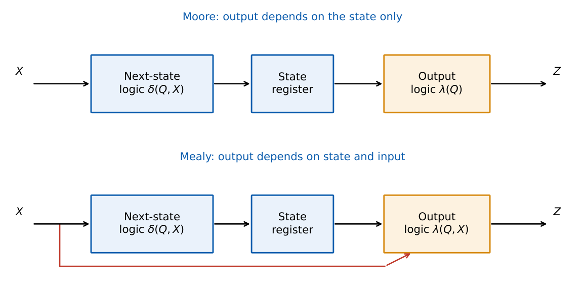

Finite State Machines: Mealy, Moore and State Minimization
In this chapter
Reading a state diagram, difference between Mealy and Moore outputs, counting states for sequence detectors, state minimization by partitioning, state assignment and finding the next-state equations.
9.1 Structure of a synchronous FSM
A synchronous sequential circuit has a state register (flip-flops), next-state logic \(\delta\) and output logic \(\lambda\): \[ Q^+=\delta(Q,X),\qquad Z=\begin{cases}\lambda(Q)&\text{Moore}\\ \lambda(Q,X)&\text{Mealy}\end{cases} \]

| Moore | Mealy | |
|---|---|---|
| Output depends on | present state only | present state and present input |
| Output label in diagram | inside the state circle | on the transition arc (\(x/z\)) |
| Output timing | synchronous, changes only after a clock edge | may change as soon as the input changes |
| Number of states | usually larger | usually smaller |
| Glitches | output free of input glitches | input glitches reach the output |
| Output delay | one clock later than Mealy | earlier by a clock |
Any Mealy machine can be converted to a Moore machine, and vice versa; the Moore equivalent of an \(N\)-state Mealy machine with \(k\) distinct output values needs at most \(N\cdot k\) states.
9.2 State diagrams and tables
Draw a circle for each state and a labelled arc for each transition; a state table lists the next state and the output for every (state, input). A complete machine has a transition for every input combination.
9.2.1 Sequence detector (overlapping), Moore
Detect the pattern \(101\) on a serial input \(x\) with output \(Z=1\) when the last three bits were \(101\) (overlaps allowed).
| State (meaning) | \(x=0\) | \(x=1\) | \(Z\) |
|---|---|---|---|
| \(S_0\) (none) | \(S_0\) | \(S_1\) | 0 |
| \(S_1\) (“1”) | \(S_2\) | \(S_1\) | 0 |
| \(S_2\) (“10”) | \(S_0\) | \(S_3\) | 0 |
| \(S_3\) (“101”) | \(S_2\) | \(S_1\) | 1 |
After \(S_3\) (101), a further 0 gives the suffix “10” (overlap) so go to \(S_2\); a further 1 gives suffix “1” so go to \(S_1\).
Detecting a pattern of length \(L\) (overlapping allowed): Moore needs \(L+1\) states; Mealy needs \(L\) states.
Non-overlapping detection needs the same number of states but different transitions after a match (return to \(S_0\)).
9.2.2 State assignment and equations
Encode with \(\lceil\log_2N\rceil\) flip-flops. Choose a code that reduces logic; one-hot (one flip-flop per state) needs \(N\) flip-flops but simple logic and is common in FPGAs; Gray assignment helps with races.
For the table above with \(S_0..S_3=00,01,10,11\) (\(Q_1Q_0\)) and D flip-flops:
| \(Q_1Q_0\) | \(x\) | \(Q_1^+Q_0^+\) | \(Z\) |
|---|---|---|---|
| 00 | 0 | 00 | 0 |
| 00 | 1 | 01 | 0 |
| 01 | 0 | 10 | 0 |
| 01 | 1 | 01 | 0 |
| 10 | 0 | 00 | 0 |
| 10 | 1 | 11 | 0 |
| 11 | 0 | 10 | 1 |
| 11 | 1 | 01 | 1 |
\[ D_1=\overline xQ_0+x\,Q_1\overline{Q_0},\qquad D_0=x,\qquad Z=Q_1Q_0 . \]
9.3 State minimization
Two states are equivalent if, for every input sequence, they give the same output sequence. Equivalent states can be merged, reducing flip-flops and logic.
9.3.1 Partition (or implication-table) method
- Start with a partition of states by their outputs (for Mealy: output vector over all inputs).
- Refine: two states stay together only if, for every input, their next states lie in the same block.
- Repeat until the partition does not change. Each block is one state of the minimal machine.
Next-state/output for \(x=0\,/\,x=1\): \(A:\,B/0,\,C/0\); \(B:\,D/0,\,E/0\); \(C:\,D/0,\,E/0\); \(D:\,A/0,\,A/1\); \(E:\,A/0,\,A/1\).
Output partition: \(\{A,B,C\}\) (outputs \(0,0\)) and \(\{D,E\}\) (outputs \(0,1\)).
Refine \(\{A,B,C\}\): \(A\) goes to \(\{B,C\}\) (block 1) while \(B,C\) go to \(\{D,E\}\) (block 2), so \(A\) is separated. \(B\) and \(C\) have the same successors, so they stay together.
Result: \(\{A\},\{B,C\},\{D,E\}\): three states, so two flip-flops instead of three.
Incompletely specified machines need compatibility (not equivalence) classes and closure checks: minimal covers are harder to find.
9.4 Timing of the FSM
The clock period must satisfy \(T\ge t_{cq}+t_{logic}+t_{su}+t_{skew}\); hold requires \(t_{cq}+t_{logic,min}\ge t_h+t_{skew}\) (Chapter 11). For a Mealy output used asynchronously, input glitches propagate.
9.5 Design checklist
- Word description \(\to\) state diagram \(\to\) state table.
- Minimise states, assign codes.
- Derive next-state and output equations (K-map).
- Check unused states and reset behaviour.
- Verify timing.
(i) In a Moore machine the output is written on the state, not the arc. (ii) The number of states of an overlapping detector is \(L+1\) for Moore, \(L\) for Mealy; counting flip-flops from this is a favourite question. (iii) A Mealy output can change in the middle of a clock cycle; do not call it “synchronous” without registering it. (iv) Equivalent states must agree on all future outputs, not just the next output.
Sequence-detector states: write the prefixes of the pattern (the empty prefix, then the first letter, …), one state per prefix; on a mismatch fall back to the longest suffix that is also a prefix. Flip-flops \(=\lceil\log_2(\text{states})\rceil\).
9.6 GATE problems
Q1. A Moore machine to detect the (overlapping) sequence \(1011\) needs how many states? (A) 3 (B) 4 (C) 5 (D) 6.
Q2. The Mealy machine for the same detector needs (A) 3 (B) 4 (C) 5 (D) 6.
Q3. In a Moore machine the output (A) depends on the input only (B) depends on the state only (C) depends on both (D) is independent of the clock.
Q4. Minimum number of flip-flops for a machine with 9 states after minimisation: (A) 2 (B) 3 (C) 4 (D) 9.
Answers: Q1 (C): \(L+1=5\). Q2 (B). Q3 (B). Q4 (C): \(2^4=16\ge9\).
Q5. For the Moore detector of \(101\) above, the input stream \(x=1\,0\,1\,0\,1\,1\) (starting at \(S_0\)) produces the output stream \(Z\) (A) \(0\,0\,1\,0\,1\,0\) (B) \(0\,0\,0\,0\,0\,0\) (C) \(0\,0\,1\,0\,1\,1\) (D) \(0\,1\,1\,0\,1\,0\).
Q6. The next-state equation \(D_1=\overline xQ_0+xQ_1\overline{Q_0}\) is evaluated at \(Q_1Q_0=11\), \(x=0\). The next state is (A) 00 (B) 01 (C) 10 (D) 11.
Q7. A Mealy machine has 4 states and outputs 0 or 1. Its Moore equivalent needs at most (A) 4 (B) 6 (C) 8 (D) 16 states.
Answers: Q5 (A): \(S_0\xrightarrow1S_1\xrightarrow0S_2\xrightarrow1S_3(Z{=}1)\xrightarrow0S_2\xrightarrow1S_3(Z{=}1)\xrightarrow1S_1\); \(Z=0,0,1,0,1,0\). Q6 (C): \(D_1=1\), \(D_0=0\), so \(10\). Q7 (C): \(4\times2\).
Q8. Number of states in the minimised machine of the 5-state example: .
Q9. A one-hot encoded 6-state FSM needs flip-flops versus a binary encoding needing .
Q10. A Moore detector for the non-overlapping pattern \(0110\) needs how many states?
Answers: Q8: 3. Q9: 6 and 3. Q10: 5.
Q11. Choose all true: (A) Moore outputs cannot glitch with input noise within a cycle. (B) A Mealy machine usually needs fewer states. (C) State minimization can reduce flip-flops. (D) Equivalent states may have different outputs on some input sequence.
Answers: Q11: (A), (B), (C).
T1. Draw the Mealy arcs for detecting \(11\) (overlap). T2. How many states in Moore for \(110\)? T3. Binary code width for 17 states?
Answers: T1: \(S_0\xrightarrow{0/0}S_0\), \(S_0\xrightarrow{1/0}S_1\), \(S_1\xrightarrow{0/0}S_0\), \(S_1\xrightarrow{1/1}S_1\). T2: 4. T3: 5.
- Moore \(Z=f(Q)\); Mealy \(Z=f(Q,x)\). Detector of length \(L\): Moore \(L+1\), Mealy \(L\) states.
- Minimise by output-partition refinement; flip-flops \(\lceil\log_2N\rceil\) (binary) or \(N\) (one-hot).
- Mealy \(\to\) Moore: at most \(N\times k\) states.
- Check lock-out and timing \(T\ge t_{cq}+t_{logic}+t_{su}\).